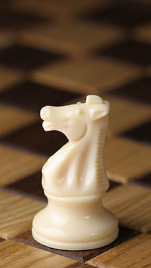
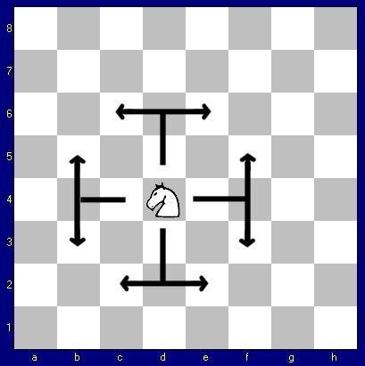

Nel gioco degli scacchi il Cavallo è uno dei pezzi a disposizione dei giocatori. Assieme all'Alfiere è uno dei cosiddetti "pezzi leggeri" in contrapposizione a Donna e Torre chiamati "pezzi pesanti". È spesso raffigurato come la testa di un cavallo. Simboleggia i soldati a cavallo, i cavalieri. Il movimento del cavallo dà origine al problema matematico del Percorso del cavallo. Vale 3 punti.

